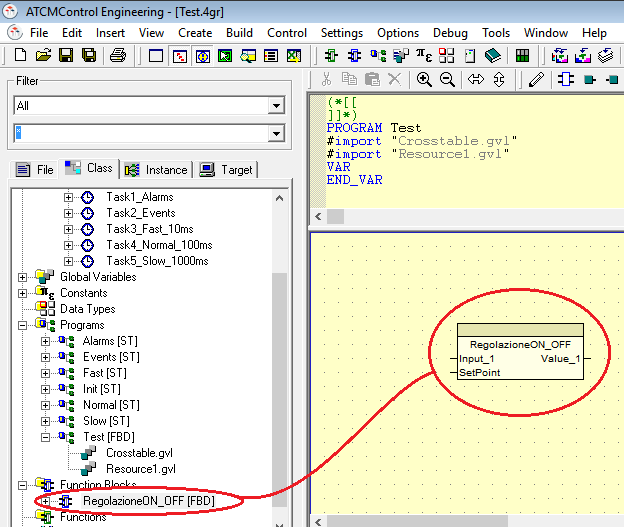
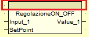
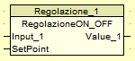
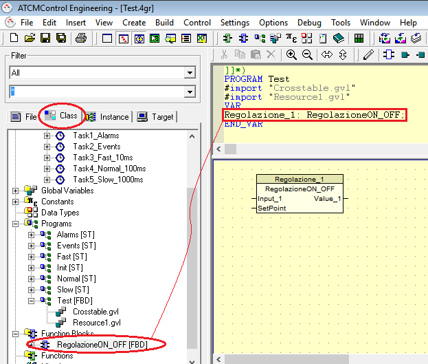

Um einen Funktionsblock innerhalb eines Programms zu verwenden, Wählen Sie den Block und ziehen ihn in das Programm.

Innerhalb eines Programms können mehrere Instanzen eines Funktionsblocks verwendet werden. Aus diesem Grund muss jeder Funktionsblock deklariert werden.
Wählen Sie den Funktionsblock im Programm aus, “doppelklicken Sie” auf das Oberteil (dunklen Teil) und schreiben Sie den Namen der Instanz, die Sie diesem Funktionsblock geben möchten.
|
 |
→ |
 |
Dann müssen Sie die neue Instanz des Funktionsblocks deklarieren (innerhalb zwischen VAR und END_VAR).
Dazu können Sie die in der “Class” vorhandenen Funktionsblöcke direkt in den VAR und END_VAR ziehen und müssen den Block nur umbenennen (z.B. “Regolazione_1”) .

Für das Einfügen von Variablen siehen Sie Kapitel “Einfügen von Variablen in FUP – LD – SFC-Programme”.